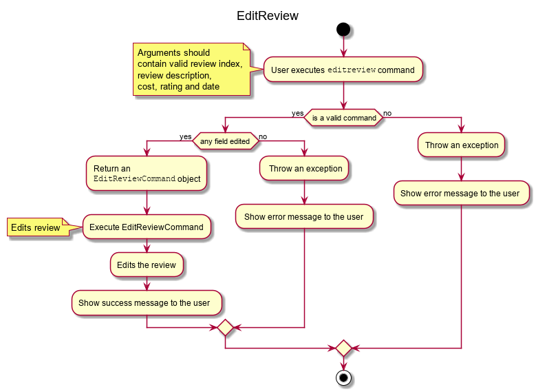

Overview
This documents gives an insight to the contributions I made to EatMe, a personalized food diary application. I worked along with a team of 4 other Computer Science Students to morph the existing Address Book 3 application into EatMe.
EatMe helps users to keep track of the places they have been to, mouthwatering dishes that they consumed, and also stay up to date with the latest trends in the world of food. Users interact with it using a Command Line Interface (CLI) and it also has a Graphical User Interface (GUI) created using JavaFX. The application is written in Java and has about 10 kLoC.
This is how the application looks like:
Summary of Contributions
-
Code contributed : Code contributed
-
Major enhancement: Added the Review (Add, Edit, Delete) feature
-
EatMe being a food 'diary' app, the central feature is the ability to write down your experiences, view them in the future, and make changes if necessary. The review feature allows users to add reviews to an eatery, edit the reviews added and even delete them.
-
In the process of morphing the Address Book into EatMe, all the attributes of an Eatery only had a single piece of information associated with them, like the Address attribute. However, a review consists of description, price, rating and time of the meal. This arrangement made it quite challenging to store and edit reviews. On the brighter side, the user can now decide where and what to eat quickly by taking a glance at the reviews' costs and ratings. In the event that the users input a review wrongly, they can edit or delete them at their will.
-
-
Other enhancements: Added the AddTag and RemoveTag features
-
Originally, the only way to add or remove tags was by using the
editcommand, which replaced all the existing tags with the new input. If an eatery was tagged as#good,#expensive,#Chinese,#elder-friendly, and the user wanted to delete the#expensivetag, he would have had to inputedit [id] \t good \t Chinese \t elder-friendlyas the existing tags were replaced by the new ones. It is very frustrating if the eatery is associated with multiple tags and the user just wants to edit one. -
So, I came up with the AddTag and RemoveTag features that operate only on the tags specified by the user. Now,
removetag [id] \t expensiveis used to remove the#expensivetag. Likewise,addtag [id] \t …will be used to add the required tags. The effects are cumulative, allowing the user to operate efficiently. -
Relevant PRs: #155
-
-
Other Contributions:
-
Initial Phase:
-
Project Management:
-
Drafting a rough project plan with reasonable deadlines.
-
Keeping track of issues on Github.
-
-
Documentation:
-
Community
-
Contributions to the User Guide
Given below are the sections that I contributed to the User Guide. |
Editing an eatery: edit
Edits an existing eatery in the application.
Format: edit [index] {\n [name of eatery]} {\a [address]} {\c [category]} {\t [tags]…}
Examples:
-
edit 1 \t good-for-groups -
edit 1 \a NUS Biz School
Reviewing an eatery: review
Leaves a review for the specified eatery.
Format: review [index] \d [description] \p [price per person] \r [rating] \w [date in DD/MM/YYYY format]
Examples:
-
review 2 \d Nice Condensed Milk Pork Ribs \p 15 \r 4 \w 23/10/2019
Editing a review: editreview
Edits an eatery’s review. Use the editreview command only when you can see
an eatery’s reviews.
Format: editreview [index] {\d [description]} {\p [price per person]} {\r [rating]} {\w [date in DD/MM/YYYY format]}
Examples:
-
editreview 1 \p 3.6 \r 1

Deleting a review: deletereview
Deletes an eatery’s review. Use the deletereview command only when you can see an eatery’s reviews.
Format: deletereview [index]
Examples:
-
deletereview 2

-
Apart from these, I wrote the documentation for addtag and removetag as well.
Contributions to the Developer Guide
Given below are the sections that I contributed to the User Guide. |
Review Eatery feature
Implementation
The review mechanism is facilitated by EateryList.
It is stored internally as a set of reviews along with the other
attributes of an eatery.
Additionally, it implements the following operations:
-
Eatery#addReview— Adds a review to the eatery identified by the user input.
Given below is an example usage scenario and how the review mechanism behaves at each step.
Step 1. The user launches the application for the first time. The EateryList will be initialized with the initial json data stored.
Step 2. The user executes review 1 … command to add a review to the first Eatery in the address book. The review command will call Eatery#addReview().
| If the index given is not a valid index (ie, out of bounds or negative), it will return an error to the user rather than attempting to review the Eatery. |
If the review is missing a Description, Rating, Cost or a Date field, an error will be shown to the user instead of adding the review.
|
Step 3. The eatery list now returns a success message upon successfully adding a review to the eatery.
The following diagram shows the activities involved.

The following diagram shows how the method is executed.
Aspect: How review executes
-
Alternative 1 (current choice) Adds a review to an eatery’s list of reviews.
-
Pros: Easy to understand and implement.
-
Cons: The set of reviews of an
Eateryis not final, unlike tags.
-
-
Alternative 2 Return a new set of reviews every time a review is added.
-
Pros: Makes the set of reviews final, adhering to the existing model.
-
Cons: Highly inefficient
-
Aspect: Data Structure used to store Reviews
-
Alternative 1 (current choice): No further nesting of Review field in Eatery.
-
Pros: Easily implemented and will not compromise speed.
-
Cons: The OOP model might be different from other Commands.
-
-
Alternative 2: Further nesting of Review field in Eatery.
-
Pros: A better OOP model.
-
Cons: May decrease performance and difficult to implement.
-
Edit Review feature
Implementation
The edit review mechanism is facilitated by EateryList. It makes use of the following operations:
-
EateryList#getActiveEatery -
EateryList#getActiveReviews
Given below is an example usage scenario and how the close mechanism behaves at each step.
Step 1. The user decides to check the reviews of an eatery by using show command.
Step 2. The user then decides to edit the first review of the eatery and executes editreview 1 … with the necessary fields.
| If none of the fields entered are different from the existing fields, the user will be shown an error saying that at least one field should be different. |
| If the user input is not according to the given format, an error will be shown to the user instead of attempting to edit the review. |
Step 3. The application returns a success message upon successfully editing the review.
The following diagram shows the activities involved. 
Design Considerations:
Aspect: How edit review executes
-
Alternative 1 (current choice): When the show command is used,
EateryList#setActiveEaterywill set the eatery shown as the active eatery. When the user attempts to edit review, the eatery is accessed usingEateryList#getActiveEatery. The reviews are modified by usingEateryList#getActiveReviews, which returns a list of reviews. The changed list is set to theActiveEaterybyEatery#setReviews.-
Pros: Easy to access and edit reviews.
-
Cons: The
ActiveEateryis not modified until theshowcommand is used on another eatery.
-
-
Alternative 2: Operate directly on the list of reviews after using
showcommand and set the changed list to the eatery.-
Pros:
EditReviewis only accessible after usingshowcommand. -
Cons: Difficult to implement and understand.
-
Delete Review feature
Implementation
The delete review mechanism is facilitated by EateryList. It makes use of the following operations:
-
EateryList#getActiveEatery -
EateryList#getActiveReviews
Given below is an example usage scenario and how the close mechanism behaves at each step.
Step 1. The user decides to check the reviews of an eatery by using show command.
Step 2. The user then decides to delete the first review of the eatery and executes deletereview 1 … .
| If the index given is not a valid index (ie, out of bounds or negative), it will return an error to the user rather than attempting to close the Eatery. |
Step 3. The application returns a success message upon successfully deleting the review.
Design Considerations:
Aspect: How delete review executes
-
Alternative 1 (current choice): When the show command is used,
EateryList#setActiveEaterywill set the eatery shown as the active eatery. When the user attempts to delete a review, the eatery is accessed usingEateryList#getActiveEatery. The reviews are modified by usingEateryList#getActiveReviews, which returns a list of reviews. The changed list is set to theActiveEaterybyEatery#setReviews.-
Pros: Easy to access and delete reviews.
-
Cons: The
ActiveEateryis not modified until theshowcommand is used on another eatery.
-
-
Alternative 2: Operate directly on the list of reviews after using
showcommand and set the changed list to the eatery.-
Pros:
DeleteReviewis only accessible after usingshowcommand. -
Cons: Difficult to implement and understand.
-
The following diagram shows the use case of review field as a whole.
-
Apart from these, I wrote the documentation for addtag and removetag as well.